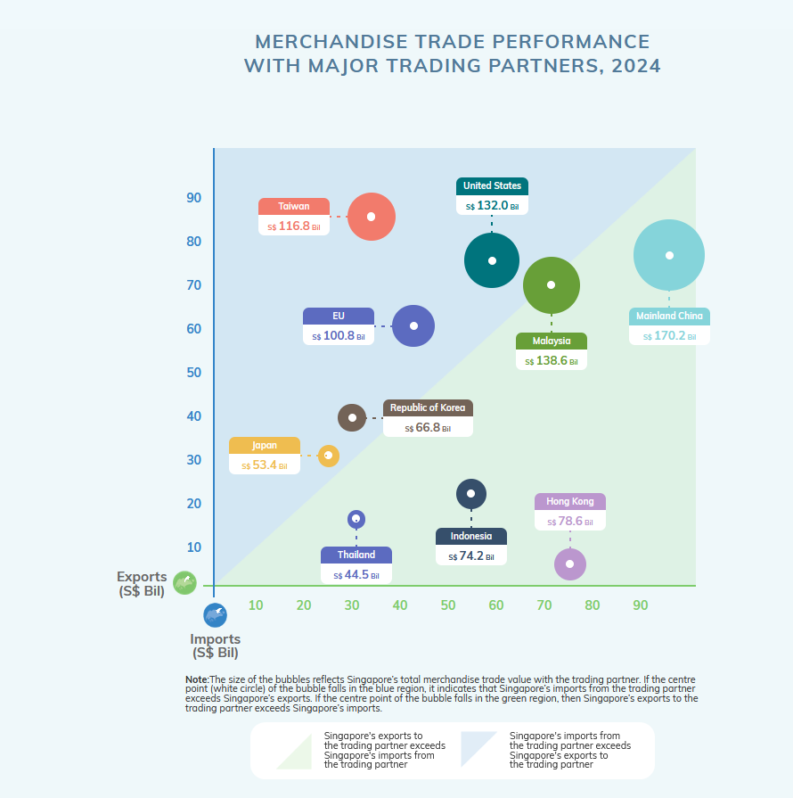

library(magick)
pacman::p_load(tidyverse, readxl, dplyr)
pacman::p_load(tidyverse, gganimate, gifski, scales, ggrepel, lubridate)Take-home Exercise 2: Be Tradewise or Otherwise
Overview
This assignment requires the application of visual analytics techniques to conduct a systematic exploration and analysis of Singapore’s international trade patterns and trends since 2015.
The Task
This take-home exercise comprises the following requirements:
Obtain the “Merchandise Trade by Region/Market” dataset from the Department of Statistics Singapore, DOS website via the Merchandise Trade by Region/Market page.
Conduct a critical evaluation of three data visualizations presented on this page by assessing their respective strengths and limitations
Implement enhanced versions of the selected visualizations with R packages.
Perform time-series forecasting methodologies on the trade data to support analytical findings.
Getting started
Load packages
First, we load packages required:
Import data
Next, we import the “Merchandise Trade by Region/Market” dataset. The dataset has a hierarchical structure with continents and their respective countries, along with various trade metrics across multiple time periods.
The data preparation process handles the dataset’s structure by:
- Skipping metadata and header rows
- Processing the hierarchical relationship between regions and countries
- Cleaning country names by removing indentation
- Creating a standardized tabular structure with clear column naming
- Combining domestic exports and re-exports to calculate total exports
We created four key dataframes, each corresponding to a specific trade flow:
imports: Contains all import data by country and regiondomestic_exports: Contains Singapore’s direct exports of locally produced goodsreexports: Contains goods that were imported and then exported with minimal processingtotal_exports: Combines domestic exports and re-exports
Code
file_path <- "data/outputFile.xlsx"
clean_trade_data <- function(file_path, sheet_name) {
raw_data <- read_excel(file_path, sheet = sheet_name, skip = 10)
# Find where footnotes begin
for(i in 1:nrow(raw_data)) {
first_col_value <- raw_data[[1]][i]
if(is.na(first_col_value) || grepl("Footnotes:", first_col_value) || first_col_value == "") {
break
}
}
# Keep only the rows before footnotes
clean_data <- raw_data[1:(i-1), ]
current_region <- NA
result_df <- data.frame()
for(j in 1:nrow(clean_data)) {
row_value <- clean_data$`Data Series`[j]
if(row_value %in% c("America", "Asia", "Europe", "Oceania", "Africa")) {
current_region <- row_value
next # Skip the region row itself
}
# Skip the "Total All Markets" row
if(row_value == "Total All Markets") {
next
}
if(grepl("^ +", row_value) || !is.na(current_region)) {
country_name <- trimws(row_value)
country_row <- clean_data[j, ]
country_row$Region <- current_region
country_row$`Data Series` <- country_name
result_df <- rbind(result_df, country_row)
}
}
names(result_df)[1] <- "Country"
result_df <- result_df %>%
select(Country, Region, everything())
return(result_df)
}
imports <- clean_trade_data(file_path, "T1")
domestic_exports <- clean_trade_data(file_path, "T2")
reexports <- clean_trade_data(file_path, "T3")
# Make sure both dataframes have the same countries and regions
all_countries <- unique(c(domestic_exports$Country, reexports$Country))
all_regions <- unique(c(domestic_exports$Region, reexports$Region))
standardize_df <- function(df, all_countries, all_regions) {
template <- expand.grid(
Country = all_countries,
Region = all_regions,
stringsAsFactors = FALSE
) %>%
semi_join(
bind_rows(
select(domestic_exports, Country, Region),
select(reexports, Country, Region)
),
by = c("Country", "Region")
)
result <- template %>%
left_join(df, by = c("Country", "Region"))
result <- result %>%
mutate(across(where(is.numeric), ~ifelse(is.na(.), 0, .)))
return(result)
}
domestic_exports <- standardize_df(domestic_exports, all_countries, all_regions)
reexports <- standardize_df(reexports, all_countries, all_regions)
total_exports <- domestic_exports %>%
select(Country, Region) %>%
bind_cols(
domestic_exports %>%
select(where(is.numeric)) %>%
rename_with(~paste0(., "_domestic"), everything()),
reexports %>%
select(where(is.numeric)) %>%
# Rename columns to identify source
rename_with(~paste0(., "_reexport"), everything())
)
date_cols <- unique(sub("_domestic$|_reexport$", "",
names(total_exports)[-(1:2)]))
# For each date, add domestic and re-export values
for(date in date_cols) {
total_exports[[date]] <- total_exports[[paste0(date, "_domestic")]] +
total_exports[[paste0(date, "_reexport")]]
}
# Keep only the total columns plus Country and Region
total_exports <- total_exports %>%
select(Country, Region, all_of(date_cols))
## Check dimensions to verify. Should be the same
# dim(domestic_exports) # output: 154 267
# dim(reexports) # output: 154 267
# dim(total_exports) # output: 154 267 We can verify that imports is correctly configured by examining the initial rows of the dataframe.
head(imports)# A tibble: 6 × 267
Country Region `2025 Jan` `2024 Dec` `2024 Nov` `2024 Oct` `2024 Sep`
<chr> <chr> <dbl> <dbl> <dbl> <dbl> <dbl>
1 Antigua And Bar… Ameri… 0 0 0 0 0
2 Argentina Ameri… 4 12.5 116. 4.1 8.1
3 Bahamas Ameri… 0 8.1 0 0 0
4 Bermuda Ameri… 0 0 0 0 0
5 Brazil Ameri… 870. 587. 942. 640. 787.
6 Canada Ameri… 268. 213. 222. 324. 236.
# ℹ 260 more variables: `2024 Aug` <dbl>, `2024 Jul` <dbl>, `2024 Jun` <dbl>,
# `2024 May` <dbl>, `2024 Apr` <dbl>, `2024 Mar` <dbl>, `2024 Feb` <dbl>,
# `2024 Jan` <dbl>, `2023 Dec` <dbl>, `2023 Nov` <dbl>, `2023 Oct` <dbl>,
# `2023 Sep` <dbl>, `2023 Aug` <dbl>, `2023 Jul` <dbl>, `2023 Jun` <dbl>,
# `2023 May` <dbl>, `2023 Apr` <dbl>, `2023 Mar` <dbl>, `2023 Feb` <dbl>,
# `2023 Jan` <dbl>, `2022 Dec` <dbl>, `2022 Nov` <dbl>, `2022 Oct` <dbl>,
# `2022 Sep` <dbl>, `2022 Aug` <dbl>, `2022 Jul` <dbl>, `2022 Jun` <dbl>, …Visualisation 1: MERCHANDISE TRADE PERFORMANCE
Original Design
This visualization is intended to display Singapore’s trade relationships with its major trading partners, showing imports, exports, total trade volume, and trade balance simultaneously in a static bubble chart format. The chart uses a scatter plot framework with imports on the x-axis, exports on the y-axis, and bubble size representing total trade volume.
The original design is shown below.

Critique
Clarity
Why it is clear:
Intuitive coordinate mapping: The use of a diagonal reference line creates an immediate visual classifier for trade surplus vs deficit. This diagonal approach leverages our spatial reasoning abilities to quickly identify balanced trade positions.
Multi-dimensional encoding: Successfully represents four data dimensions (imports, exports, total trade volume, and trade balance) in a single visualization, allowing viewers to grasp complex relationships at once.
Direct labeling approach: Each bubble contains both qualitative (country name) and quantitative (exact trade value) information, eliminating the need to reference a separate legend for primary data points.
Why it can be confusing:
- Axis labeling position: The imports and exports labels positioned in the bottom corners could be potentially confusing or misleading, as readers may be uncertain which axis corresponds to which label. The axes would be more clearly defined if labeled directly on the sides.
- Regional vs country-level comparison: Presenting the EU as a single entity while showing individual countries creates an inconsistent unit of analysis. This approach obscures the distribution of countries within the EU and their individual trade positions relative to Singapore.
- Static limitation: The single time-point snapshot fails to reveal trends or patterns in trading relationships that have evolved over time, limiting context for analysis.
Aesthetics
Why it is beautiful:
- Visual harmony: The consistent use of circular elements creates a visual rhythm across the chart, with the varying sizes creating a natural visual hierarchy that draws attention to major trading partners. -Bounded compositional structure: The diagonal line creates a clear compositional structure that organizes the visual space effectively, using the principle of visual balance across the chart.
Why it can be ugly:
- While the visualization is generally attractive, the arbitrary color scheme for countries misses an opportunity to add meaningful encoding (such as by geographic region), which would enhance both the aesthetic appeal and analytical value of the chart.
Animated Bubble Chart of Singapore’s Trade with Major Partners
Animated bubble chart of Singapore’s trade with major partners This visualization shows an animated bubble chart displaying Singapore’s merchandise trade performance with its top 20 trading partners over time. The animation provides several key insights that a static visualization cannot:
- Temporal evolution: We can observe how trading relationships have evolved over the years, with some partners becoming more significant while others decline in importance.
- Regional patterns: By color-coding bubbles by region, we can easily identify which regions have become increasingly important to Singapore’s trade network.
- Trade balance dynamics: The animation reveals how the trade balance (surplus or deficit) with key partners has shifted over time, with bubbles moving across the diagonal line that represents balanced trade.
- Comparative size changes: The changing size of bubbles represents the growth or decline in total trade volume with each partner, offering a visual representation of Singapore’s changing trade priorities.
- Market concentration or diversification: We can observe whether Singapore’s trade has become more concentrated among fewer partners or more diversified across many partners over the years.
Data Preparation
We’ll work with the existing dataframes (imports and total_exports) that were already created in the data preparation step.
# Get all date columns (excluding Country and Region columns)
date_cols <- colnames(imports)[-(1:2)]
# Convert date columns to proper date format for sorting
date_objects <- as.Date(paste0("01 ", date_cols), format = "%d %Y %b")
if(any(is.na(date_objects))) {
# Try alternative format if first attempt has NAs
date_objects <- as.Date(paste0("01 ", date_cols), format = "%d %b %Y")
}
# Sort date columns chronologically
date_cols_sorted <- date_cols[order(date_objects)]
# Get the latest period
latest_period <- tail(date_cols_sorted, 1)
# Now identify top 20 countries by total trade volume in the latest period
top_countries <- imports %>%
# Add exports for the latest period
left_join(total_exports %>% select(Country, Region, all_of(latest_period)),
by = c("Country", "Region"),
suffix = c("_imports", "_exports")) %>%
# Calculate total trade (imports + exports) for latest period
mutate(total_trade = .data[[paste0(latest_period, "_imports")]] +
.data[[paste0(latest_period, "_exports")]]) %>%
# Sort by total trade volume, descending
arrange(desc(total_trade)) %>%
# Take top 20
slice_head(n = 20) %>%
# Select just the country and region
select(Country, Region)
# Print top countries for reference
top_countries# A tibble: 20 × 2
Country Region
<chr> <chr>
1 Taiwan Asia
2 Malaysia Asia
3 China Asia
4 United States America
5 Hong Kong Asia
6 Korea, Rep Of Asia
7 Indonesia Asia
8 Japan Asia
9 Viet Nam Asia
10 Thailand Asia
11 India Asia
12 United Arab Emirates Asia
13 Australia Oceania
14 Philippines Asia
15 Germany Europe
16 United Kingdom Europe
17 France Europe
18 Switzerland Europe
19 Netherlands Europe
20 Brazil America# Create a long format dataset for trade data over time for the top 20 countries
trade_data_long <- tibble()
for(date_col in date_cols_sorted) {
# Extract imports data for this period
period_imports <- imports %>%
semi_join(top_countries, by = c("Country", "Region")) %>%
select(Country, Region, all_of(date_col)) %>%
rename(Imports = all_of(date_col))
# Extract exports data for this period
period_exports <- total_exports %>%
semi_join(top_countries, by = c("Country", "Region")) %>%
select(Country, Region, all_of(date_col)) %>%
rename(Exports = all_of(date_col))
# Join imports and exports
period_data <- period_imports %>%
left_join(period_exports, by = c("Country", "Region")) %>%
# Add period information
mutate(
Period = date_col,
# Parse the date from the column name
Date = as.Date(paste0("01 ", date_col), format = "%d %Y %b", tz = "UTC"),
# If the above format doesn't work, try this alternative format
Date = if(all(is.na(Date))) as.Date(paste0("01 ", date_col), format = "%d %b %Y", tz = "UTC") else Date,
# Calculate trade metrics
TotalTrade = Imports + Exports,
TradeBalance = Exports - Imports,
NetExporter = Exports > Imports,
# Year and month for easier filtering/grouping
Year = year(Date),
Month = month(Date)
)
# Add to our growing dataframe
trade_data_long <- bind_rows(trade_data_long, period_data)
}
# Handle any NA dates that might have occurred during parsing
if(any(is.na(trade_data_long$Date))) {
# Create a sequence of dates for plotting purposes
periods <- unique(trade_data_long$Period)
period_dates <- seq.Date(from = as.Date("2003-01-01"),
by = "month",
length.out = length(periods))
period_map <- tibble(
Period = periods,
MappedDate = period_dates
)
# Join with our mapping
trade_data_long <- trade_data_long %>%
left_join(period_map, by = "Period") %>%
mutate(Date = coalesce(Date, MappedDate)) %>%
select(-MappedDate)
}
# Format periods for display
trade_data_long <- trade_data_long %>%
mutate(PeriodLabel = format(Date, "%b %Y"))
# Check the structure of the final dataset
glimpse(trade_data_long)Rows: 5,300
Columns: 12
$ Country <chr> "Brazil", "United States", "China", "Hong Kong", "India",…
$ Region <chr> "America", "America", "Asia", "Asia", "Asia", "Asia", "As…
$ Imports <dbl> 77.6, 2129.9, 1539.1, 427.0, 172.8, 1255.1, 1902.4, 676.3…
$ Exports <dbl> 27.1, 2777.5, 1258.9, 2277.8, 435.0, 2356.8, 1426.5, 1012…
$ Period <chr> "2003 Jan", "2003 Jan", "2003 Jan", "2003 Jan", "2003 Jan…
$ Date <date> 2003-01-01, 2003-01-01, 2003-01-01, 2003-01-01, 2003-01-…
$ TotalTrade <dbl> 104.7, 4907.4, 2798.0, 2704.8, 607.8, 3611.9, 3328.9, 168…
$ TradeBalance <dbl> -50.5, 647.6, -280.2, 1850.8, 262.2, 1101.7, -475.9, 336.…
$ NetExporter <lgl> FALSE, TRUE, FALSE, TRUE, TRUE, TRUE, FALSE, TRUE, TRUE, …
$ Year <dbl> 2003, 2003, 2003, 2003, 2003, 2003, 2003, 2003, 2003, 200…
$ Month <dbl> 1, 1, 1, 1, 1, 1, 1, 1, 1, 1, 1, 1, 1, 1, 1, 1, 1, 1, 1, …
$ PeriodLabel <chr> "Jan 2003", "Jan 2003", "Jan 2003", "Jan 2003", "Jan 2003…Creating the Animated Bubble Chart
Now, we will create an animated bubble chart showing Singapore’s trade patterns over time. The animation showcases:
- Regional color-coding to identify geographic trade patterns
- Bubble size representing total trade volume
- Position relative to the diagonal line showing trade balance (surplus/deficit)
- Special highlighting for top 5 trading partners
- Clear annotations explaining the trade balance zones
# Define color scheme for regions
region_colors <- c(
"Asia" = "#1E88E5", # Blue
"America" = "#D81B60", # Red
"Europe" = "#8E24AA", # Purple
"Oceania" = "#43A047", # Green
"Africa" = "#F57C00" # Orange
)
# Identify top 5 trading partners by total trade in the latest period
top_partners <- trade_data_long %>%
filter(Period == latest_period) %>%
arrange(desc(TotalTrade)) %>%
slice_head(n = 5) %>%
pull(Country)
# Add a new column to identify top partners
trade_data_long <- trade_data_long %>%
mutate(
TopPartner = if_else(Country %in% top_partners, Country, "Other"),
TopPartnerFactor = factor(TopPartner, levels = c(top_partners, "Other"))
)
# Create custom color palette for top partners
partner_colors <- c(
setNames(RColorBrewer::brewer.pal(5, "Set1"), top_partners),
"Other" = "gray70"
)
# Create the base plot
p <- ggplot(
trade_data_long,
aes(x = Imports, y = Exports,
size = TotalTrade,
color = Region,
fill = Region,
alpha = 0.7)
) +
# Background shading - using polygons to properly show trade balance areas
# Base background (blue area - where imports >= exports)
annotate("rect", xmin = -Inf, xmax = Inf, ymin = -Inf, ymax = Inf,
fill = "white", alpha = 0.2) +
# Green area where exports > imports (above the diagonal)
geom_polygon(
data = data.frame(
x = c(0, max(trade_data_long$Imports) * 1.2, 0),
y = c(0, max(trade_data_long$Exports) * 1.2, max(trade_data_long$Exports) * 1.2)
),
aes(x = x, y = y),
fill = "white",
alpha = 0.2,
inherit.aes = FALSE
) +
# Add diagonal line
geom_abline(intercept = 0, slope = 1, linetype = "dashed", color = "gray70") +
# Add the bubbles
geom_point(shape = 21, stroke = 0.5) +
# Highlight top partners with different outline
geom_point(
data = function(x) filter(x, Country %in% top_partners),
aes(color = Country),
shape = 21,
stroke = 1.5,
alpha = 0.9
) +
# Add country labels
geom_text_repel(
aes(label = Country),
size = 3,
force = 3,
max.iter = 3000,
segment.color = "gray50",
segment.alpha = 0.6,
box.padding = 0.5,
point.padding = 0.3,
max.overlaps = 100,
color = "black"
) +
# Format the scales
scale_x_continuous(labels = label_number(suffix = " Bil"),
expand = expansion(mult = c(0.1, 0.1))) +
scale_y_continuous(labels = label_number(suffix = " Bil"),
expand = expansion(mult = c(0.1, 0.1))) +
# Hide the size legend but keep the region and country legends
scale_size_continuous(range = c(3, 20), guide = "none") +
scale_color_manual(values = c(region_colors, partner_colors)) +
scale_fill_manual(values = region_colors) +
# Customize the theme with legend at bottom left
theme_minimal() +
theme(
legend.position = "bottom",
legend.box = "vertical",
legend.justification = "left", # Align the legend to the left
legend.box.just = "left", # Justify the legend box to the left
legend.margin = margin(t = 5, r = 5, b = 5, l = 5),
panel.grid.minor = element_blank(),
plot.title = element_text(size = 14, face = "bold"),
plot.subtitle = element_text(size = 11, face = "italic"),
axis.title = element_text(size = 11, face = "bold")
) +
# Set labels
labs(
title = "Singapore's Merchandise Trade Performance",
subtitle = "Period: {closest_state}",
x = "Imports (S$ Bil)",
y = "Exports (S$ Bil)",
color = "Region / Top Partners",
fill = "Region") +
# Add explanatory annotations - with correct colors to match background shading
annotate("text", x = max(trade_data_long$Imports) * 0.25, y = max(trade_data_long$Exports) * 0.85,
label = "Singapore's exports exceed imports",
size = 3, color = "darkblue", hjust = 0) +
annotate("text", x = max(trade_data_long$Imports) * 0.75, y = max(trade_data_long$Exports) * 0.25,
label = "Singapore's imports exceed exports",
size = 3, color = "darkgreen", hjust = 1)
# Create animation with MUCH slower transitions
animated_chart <- p +
transition_states(
states = PeriodLabel,
transition_length = 3, # Longer transitions between states
state_length = 15 # Much longer pause on each state
) +
ease_aes('cubic-in-out') +
enter_fade() +
exit_fade()
# Create the animation object
trade_animation <- animate(
animated_chart,
nframes = 300, # More frames for smoother transitions
fps = 2, # Very slow frame rate
width = 800,
height = 800,
renderer = gifski_renderer(loop = TRUE),
res = 100
)
# Save the animation to a file
anim_save("trade_animation.gif", trade_animation)